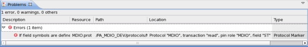

Problems View
This view shows errors or warnings and the locations of them in the list form. If you double-click an error in the list, the cursor moves to the line with error in the Editor view. It is useful to go to the line with a compile error before compiling and linking your programs.

Toolbar
Icon |
Command |
Description |
|---|---|---|

|
Remove |
Deletes the selected error from this view. |
Filters |
Launches the Filter dialog box to filter the errors. |
|

|
Menu |
Click the triangle icon to open a menu of items specific to this view. You can select a menu item from a shortcut menu.
|

|
Minimize |
Minimizes this view. |

|
Maximize |
Maximizes this view. |
Shortcut menu
Menu Item |
Description |
|---|---|
Go To |
Moves the insertion cursor to the line with the error in the Editor view. |
Show in Project Explorer |
Shows the device directory that has the source file in the Project Explorer view of the Eclipse. This is an Eclipse built-in item, and is not used for test method programming. |
Copy Paste Delete Select All |
Copies the information of the selected error to the clipboard. Performs the standard edit operations. Which options are available depends on where the focus is in this view. |
Quick Fix |
This is an Eclipse built-in item, and is not used for test method programming. |
Properties |
Displays the properties of the selected error. This is an Eclipse built-in item, and is not used for test method programming. |
Functional changes
- Introduced before SmarTest 6.3.2